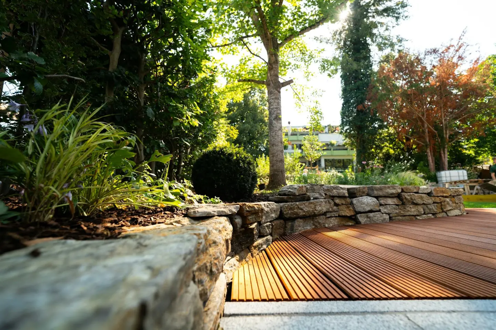
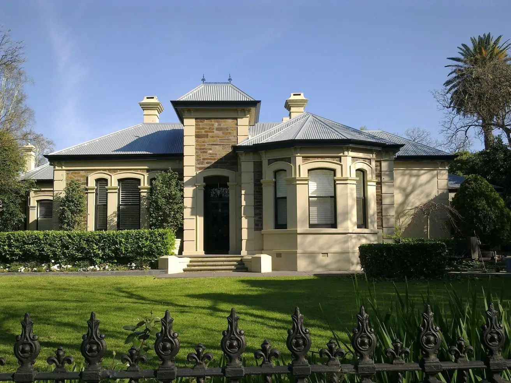
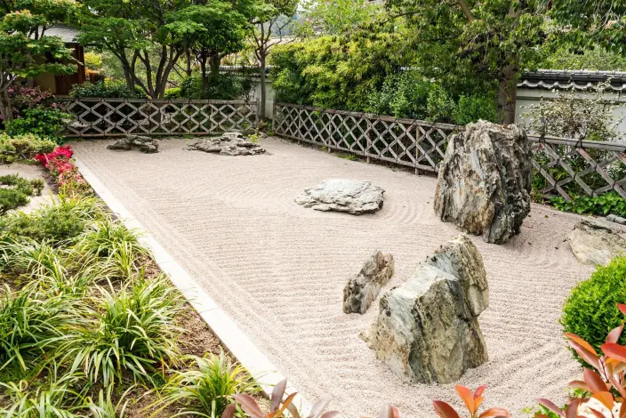

個人邸の作庭・剪定
当社の個人邸事業では、お客様の夢や理想の庭を具現化するためのサービスを提供しています。
新しく庭をつくる際には、お客様のニーズや希望を理解し、オーダーメイドの庭を設計・施工します。 また、永く手を入れていなかったお庭も、剪定や植栽の整理によって新しい価値ある空間へと再生します。お客様のライフスタイルやご予算に合わせて、効率的かつリーズナブルな手入れプランをご提案し、品質に妥協することなく施工いたします。
芦屋（兵庫県）の雑木の庭

施工年月：R2年2月 面積：85㎡
嵐山（京都府京都市）の枯山水の庭

施工年月：R4年4月 面積：60㎡